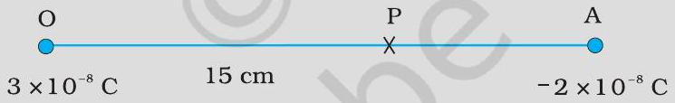
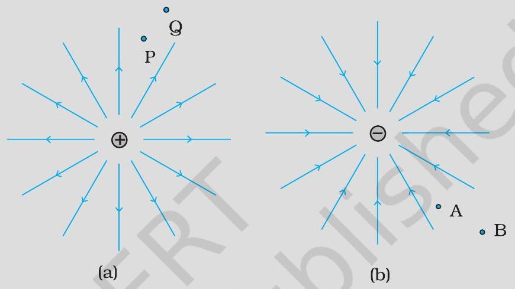
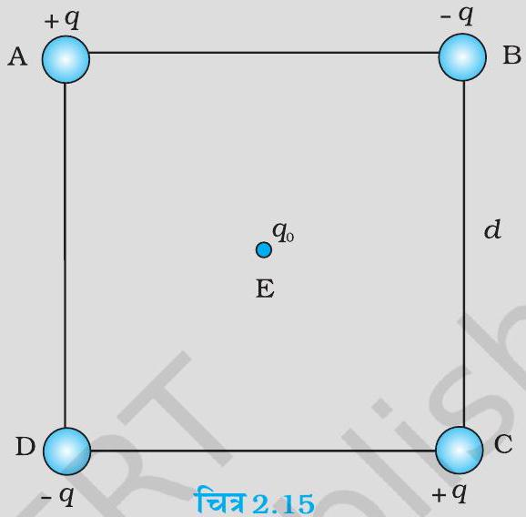
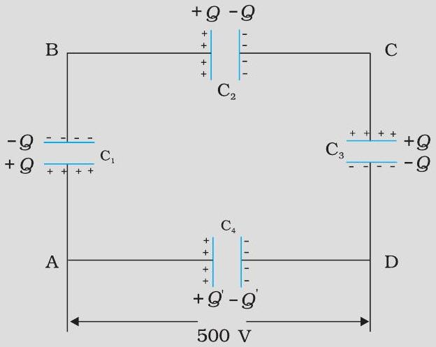
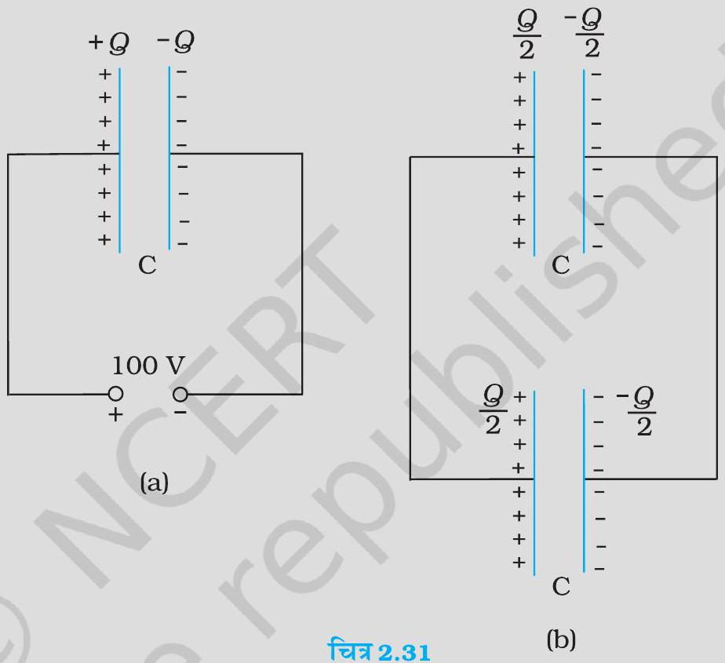

आवेश 4 × 10⁻⁷ C के कारण इससे 9 cm दूरी पर स्थित किसी बिंदु P पर विभव परिकलित कीजिए।
अब, आवेश 2 × 10⁻⁹ C को अनंत से बिंदु P तक लाने में किया गया कार्य ज्ञात कीजिए। क्या उत्तर जिस पथ के अनुदिश आवेश को लाया गया है उस पर निर्भर करता है?
3 × 10⁻⁸ C तथा -2 × 10⁻⁸ C के दो आवेश एक－दूसरे से 15 cm दूरी पर रखे हैं। इन दोनों आवेशों को मिलाने वाली रेखा के किस बिंदु पर वैद्युत विभव शून्य है？ अनंत पर वैद्युत विभव शून्य लीजिए।

(a) तथा (b) में क्रमशः एकल धन तथा ॠण आवेशों की क्षेत्र रेखाएँ दर्शायी गई हैं।

विभवांतर VP-VQ ; VB-VA के चिह्न बताइए।
बिंदु Q और P ; A और B के बीच एक छोटे से ऋण आवेश की स्थितिज ऊर्जा के अंतर का चिह्न बताइए।
Q से P तक एक छोटे धनावेश को ले जाने में क्षेत्र द्वारा किए गए कार्य का चिह्न बताइए।
B से A तक एक छोटे से ऋण आवेश को ले जाने के लिए बाह्य साधन द्वारा किए गए कार्य का चिह्न बताइए।
B से A तक जाने में क्या एक छोटे से ऋणावेश की गतिज ऊर्जा बढ़ेगी या घटेगी?
चित्र 2.15 में दर्शाए अनुसार चार आवेश भुजा d वाले किसी वर्ग ABCD के शीर्षों पर व्यवस्थित किए गए हैं।

इस व्यवस्था को एक साथ बनाने में किया गया कार्य ज्ञात कीजिए।
कोई आवेश q0 वर्ग के केंद्र E पर लाया जाता है तथा चारों आवेश अपने शीर्षों पर दृढ़ रहते हैं। ऐसा करने के लिए कितना अतिरिक्त कार्य करना पड़ता है?
दो आवेशों 7 μ C तथा -2 μ C जो क्रमशः (-9 cm, 0,0) तथा (9 cm, 0,0) पर स्थित हैं, के ऐसे निकाय, जिस पर कोई बाह्य क्षेत्र आरोपित नहीं है, की स्थिरवैद्युत स्थितिज की ऊर्जा ज्ञात कीजिए।
दोनों आवेशों को एक-दूसरे से अनंत दूरी तक पृथक करने के लिए कितने कार्य की आवश्यकता होगी?
माना कि अब इस आवेश निकाय को किसी बाह्य विद्युत क्षेत्र E = A1r²; A = 9 × 10⁵ Ne⁻¹ m² में रखा गया है। इस विन्यास की स्थिरवैद्युत ऊर्जा का परिकलन करें।
एक पदार्थ के अणु में 10⁻²⁹ cm का स्थायी वैद्युत द्विध्रुव आघूर्ण है। 10⁶ V m⁻¹ परिमाण के एक शक्तिशाली स्थिरवैद्युत क्षेत्र को लगाकर इस पदार्थ के एक मोल (निम्न ताप पर) को ध्रुवित किया गया है। अचानक क्षेत्र की दिशा 60° कोण से बदल दी जाती है। क्षेत्र की नयी दिशा में द्विध्रुवों को पंक्तिबद्ध करने में उन्मुक्त ऊष्मा ऊर्जा का आकलन कीजिए। सुविधा के लिए नमूने का ध्रुवण 100 % माना जा सकता है।
सूखे बालों में कंघा घुमाने के बाद वह कागज़ के टुकड़ों को आकर्षित कर लेता है, क्यों? यदि बाल भीगे हों या वर्षा का दिन हो तो क्या होता है? [ध्यान रहे कि कागज़ विद्युत चालक नहीं है।]
साधारण रबर विद्युतरोधी है। परंतु वायुयान के विशेष रबर के पहिए हलके चालक बनाए जाते हैं। यह क्यों आवश्यक है?
जो वाहन ज्वलनशील पदार्थ ले जाते हैं उनकी धातु की रस्सियाँ (ज़ंजीरें) वाहन के गतिमय होने पर धरती को छूती रहती हैं, क्यों?
एक चिड़िया एक उच्च शक्ति के खुले (अरक्षित) बिजली के तार पर बैठी है, और उसको कुछ नहीं होता। धरती पर खड़ा एक व्यक्ति उसी तार को छूता है और उसे सांघातिक (घातक) धक्का लगता है, क्यों?
K परावैद्युतांक के पदार्थ के किसी गुटके का क्षेत्रफल समांतर पट्टिका संधारित्र की पट्टिकाओं के क्षेत्रफल के समान है परंतु गुटके की मोटाई 34 d है, यहाँ d पट्टिकाओं के बीच पृथकन है। पट्टिकाओं के बीच गुटके को रखने पर संधारित्र की धारिता में क्या परिवर्तन हो जाएगा?
चित्र 2.29 में दर्शाए अनुसार 10 μ F के चार संधारित्रों के किसी नेटवर्क को 500 V के स्रोत से संयोजित किया गया है। (a) नेटवर्क की तुल्य धारिता, तथा (b) प्रत्येक संधारित्र पर आवेश ज्ञात कीजिए। (नोटः किसी संधारित्र पर आवेश उसकी उच्च विभव की पट्टिका पर आवेश के बराबर होता है तथा वह आवेश निम्न विभव की पट्टिका पर आवेश के परिमाण में समान, परंतु विजातीय होता है)।


900 pF के किसी संधारित्र को 100 V बैटरी से आवेशित किया गया [चित्र 2.31(a)]। संधारित्र में संचित कुल स्थिरवैद्युत ऊर्जा कितनी है?
इस संधारित्र को बैटरी से वियोजित करके किसी अन्य 900 pF के संधारित्र से संयोजित किया गया। निकाय द्वारा संचित स्थिरवैद्युत ऊर्जा कितनी है?
5 × 10⁻⁸ C तथा -3 × 10⁻⁸ C के दो आवेश 16 cm दूरी पर स्थित हैं। दोनों आवेशों को मिलाने वाली रेखा के किस बिंदु पर वैद्युत विभव शून्य होगा? अनंत पर विभव शून्य लीजिए।
10 cm भुजा वाले एक सम-षट्भुज के प्रत्येक शीर्ष पर 5 μ C का आवेश है। षट्भुज के केंद्र पर विभव परिकलित कीजिए।
6 cm की दूरी पर अवस्थित दो बिंदुओं A एवं B पर दो आवेश 2 μ C तथा -2 μ C रखे हैं।
निकाय के सम विभव पृष्ठ की पहचान कीजिए।
इस पृष्ठ के प्रत्येक बिंदु पर विद्युत क्षेत्र की दिशा क्या है?
12 cm त्रिज्या वाले एक गोलीय चालक के पृष्ठ पर 1.6 × 10⁻⁷ C का आवेश एकसमान रूप से वितरित है।
गोले के अंदर
गोले के ठीक बाहर
गोले के केंद्र से 18 cm पर अवस्थित, किसी बिंदु पर विद्युत क्षेत्र क्या होगा ?
एक समांतर पट्टिका संधारित्र, जिसकी पट्टिकाओं के बीच वायु है, की धारिता 8 pF (1 pF = 10⁻¹² F) है। यदि पट्टिकाओं के बीच की दूरी को आधा कर दिया जाए और इनके बीच के स्थान में 6 परावैद्युतांक का एक पदार्थ भर दिया जाए तो इसकी धारिता क्या होगी?
9 pF धारिता वाले तीन संधारित्रों को श्रेणीक्रम में जोड़ा गया है।
संयोजन की कुल धारिता क्या है?
यदि संयोजन को 120 V के संभरण (सप्लाई) से जोड़ दिया जाए, तो प्रत्येक संधारित्र पर क्या विभवांतर होगा?
2 pF, 3 pF और 4 pF धारिता वाले तीन संधारित्र पार्श्वक्रम में जोड़े गए हैं।
संयोजन की कुल धारिता क्या है?
यदि संयोजन को 100 V के संभरण से जोड़ दें तो प्रत्येक संधारित्र पर आवेश ज्ञात कीजिए।
पट्टिकाओं के बीच वायु वाले एक समांतर पट्टिका संधारित्र की प्रत्येक पट्टिका का क्षेत्रफल 6 × 10⁻³ m² तथा उनके बीच की दूरी 3 mm है। संधारित्र की धारिता को परिकलित कीजिए। यदि इस संधारित्र को 100 V के संभरण से जोड़ दिया जाए तो संधारित्र की प्रत्येक पट्टिका पर कितना आवेश होगा?
अभ्यास 2.8 में दिए गए संधारित्र की पट्टिकाओं के बीच यदि 3 mm मोटी अश्रक की एक शीट (पत्तर) (परावैद्युतांक = 6 ) रख दी जाती है तो स्पष्ट कीजिए कि क्या होगा जब
विभव (वोल्टेज) संभरण जुड़ा ही रहेगा।
संभरण को हटा लिया जाएगा?
12 pF का एक संधारित्र 50 V की बैटरी से जुड़ा है। संधारित्र में कितनी स्थिरवैद्युत ऊर्जा संचित होगी?
200 V संभरण (सप्लाई) से एक 600 pF के संधारित्र को आवेशित किया जाता है। फिर इसको संभरण से वियोजित कर देते हैं तथा एक अन्य 600 pF वाले अनावेशित संधारित्र से जोड़ देते हैं। इस प्रक्रिया में कितनी ऊर्जा का ह्रास होता है?